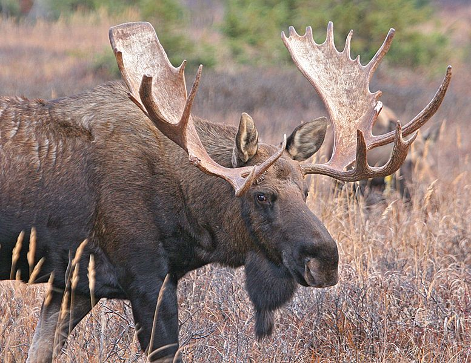

|  |
My name is guhan p and my favorite animal is the deer.They can be up to 6.5 feet and weight 1200 pound ,surprisingly,they are really good at swimming.Moose are the largest members of the deer family, standing six feet (1.8 meters) tall from hoof to shoulder, and weighing in at more than 1,000 pounds (450 kilograms). Each of their light to dark brown hairs is hollow, and the air trapped inside provides insulation. A flap of skin called a dewlap hangs from the throat. Males are distinguished from females by their antlers, which grow up to six feet across. |